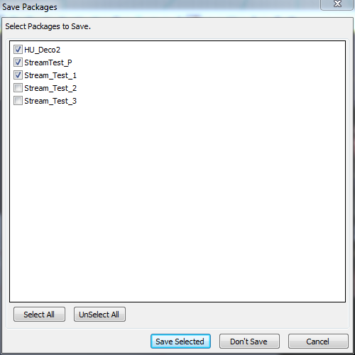
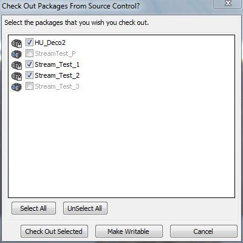

UDN
Search public documentation:
EditorPackageSaveProcedureCH
English Translation
日本語訳
한국어
Interested in the Unreal Engine?
Visit the Unreal Technology site.
Looking for jobs and company info?
Check out the Epic games site.
Questions about support via UDN?
Contact the UDN Staff
日本語訳
한국어
Interested in the Unreal Engine?
Visit the Unreal Technology site.
Looking for jobs and company info?
Check out the Epic games site.
Questions about support via UDN?
Contact the UDN Staff
UnrealEd中的包保存过程
概述
保存包对话框

- 这是当您保存包时出现的第一个对话框。这是控制您保存哪个包的主要对话框。
- Save Selected(保存选中的包) 将会尝试保存所有选中的包。
- Don't Save(不保存) 将不保存任何包，编辑器将返回到点击保存前所做的事情。
- Cancel(取消) 将不保存任何包，编辑器将停止在保存前所做的事情。比如，如果您关闭编辑器，点击"Save Selected(保存选中的包)" 或"Don't Save(不保存)" 将会关闭编辑器，但是点击"Cancel(取消)"将会取消关闭编辑器的过程。
检查包对话框

- 这是当您保存包时出现的第二个对话框。如果您没有启用源码控制或者没有要保存的需要从源码控制中迁出的包那么这个对话框将不会出现。另外，在这个对话框中仅呈现只读的文件。要想获得关于源码控制更多的信息，请参照源码控制集成页面。
- Check Out Selected(迁出选中的包) 将会迁出选中的包。注意，ghosted(幽灵)包是那些不能迁出的包，因为它们已经被其他用户迁出并锁定。包一次仅能被一个用户迁出。
- Make Writable(使得包是可写的) 使得选中的包是可写的。甚至可以使得ghosted(幽灵)包是可写的。 简单地简单它名称旁的复选框即可。这是将会在ghosted(幽灵)包上出现一个“正方形”图标。 这是让您知道如果您点击"Check Out Selected.(迁出选中的包)"，那么这个包将会被忽略。注意，通常如果您的源码控制提供者设置您要迁出的文件是只读的，那么最好不要使用这个选项，因为这会使得源码控制提供者不知道您对文件所做的修改。如果您把一个没有从源码控制中迁出的文件设置为可写状态，那么当时用这个按钮时当会出现警告。
- Cancel(取消) 取消迁出过程，但是将仍然会保存那些不需要迁出来进行保存的包。